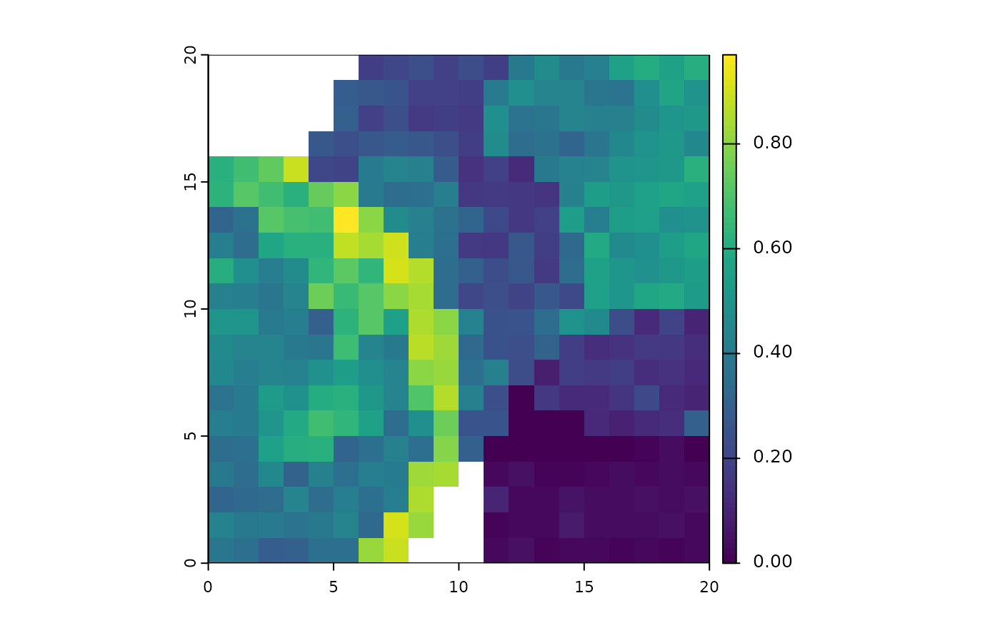

This function is a wrapper around canaper::cpr_rand_test(). It only works with binary community data.
It is largely redundant with ps_rand() and ps_canape(), which are more flexible in supporting data sets
with non-binary community data. However, this function runs faster, and supports custom null models via
make.commsim.
Arguments
- ps
phylospatial object
- null_model
see
?canaper::cpr_rand_test()- spatial
Logical: should the function return a spatial object (TRUE, default) or a vector (FALSE).
- ...
further arguments passed to
canaper::cpr_rand_test()
Details
This function runs canaper::cpr_rand_test(); see the help for that function for details.
It also runs canaper::cpr_classify_endem() on the result, and includes the resulting classification as an
additional variable, 'endem_type', in the output. 'endem_type' values 0-4 correspond to not-significant, neo,
paleo, mixed, and super endemesim, respectively.
References
Mishler, B. D., Knerr, N., González-Orozco, C. E., Thornhill, A. H., Laffan, S. W., & Miller, J. T. (2014). Phylogenetic measures of biodiversity and neo-and paleo-endemism in Australian Acacia. Nature Communications, 5(1), 4473.
Nitta, J. H., Laffan, S. W., Mishler, B. D., & Iwasaki, W. (2023). canaper: categorical analysis of neo‐and paleo‐endemism in R. Ecography, 2023(9), e06638.
Examples
# \donttest{
if(requireNamespace("canaper")){
ps <- ps_simulate(data_type = "binary")
terra::plot(ps_canaper(ps)$pd_obs_p_upper)
}

# }